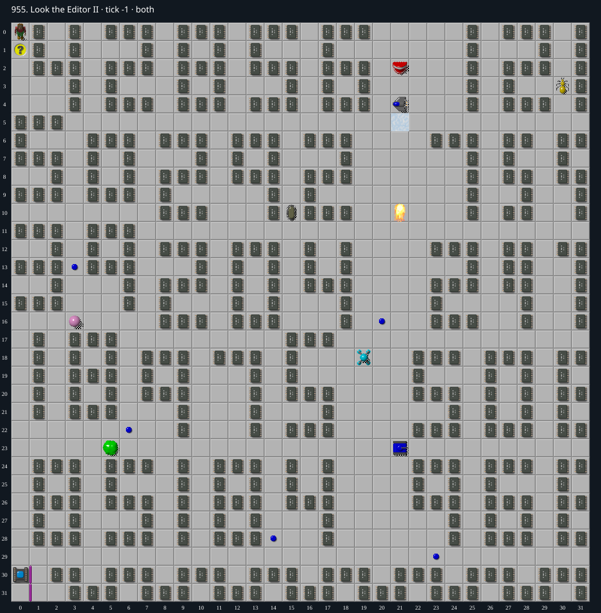

Jacques · Original Tile World MS
955. Look the Editor II
Impossibility argument246 required chips lie on unconnected beartraps; collecting any one permanently traps Chip away from the exit.
434 chips required · 999 second time limit
Why completion is impossible
- All 434 chips are required and exactly 434 chip tiles exist; none can be omitted.
- 246 of these chips have a Beartrap immediately underneath. Example: chip at (1,1), bottom file-code43. No trap connections are encoded and no brown buttons, blocks or cloners exist.
- Collecting the chip pops its top tile and leaves Chip standing on Beartrap. The native/MS arrival path only releases such a buried trap when a trap connection targets it; none does.
- Subsequent movement rejects leaving Beartrap when Chip is not released. No available gameplay mechanism removes this trap or releases it. Roaming monsters cannot collect chips for the player, and collision is not a win.
- Since (1,1) must be collected, every purported winning route becomes permanently trapped there (or at another required trap chip) before reaching the distinct sole exit at (0,31). Therefore no winning input sequence exists.
Inspect both layers
The main map shows the initial runtime state. Switch to the buried layer to inspect hidden terrain and items. Hover coordinates are also available in the downloadable SVG.


Recorded checks and attempts
- data audit: Decoded both 1024-cell DAT planes and exact level metadata; initialized production MS runtime and rendered actual game sprites.
- production runtime targeted reproduction: At tick 3 Chip(1,0); tick 7 Chip(1,1),432 chips remain. At ticks11..31 Chip stays(1,1), status playing/okay, chipReleased false, bottom tile Beartrap.
- native MS replay confirmation: Native and TypeScript E4,S4,S4,N4,W4,E4 remain at (1,1) fromtick7 through23; native stderr empty.